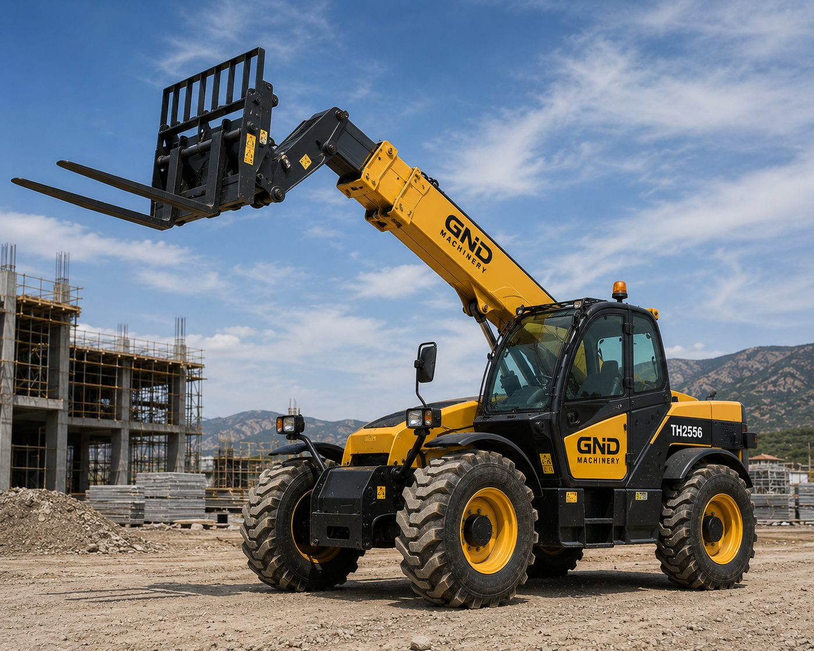
Telehandlers extend the reach of a standard forklift, moving materials to high and hard-to-reach points on construction sites, warehouses and farms. GND Machinery supplies new and used telehandlers sourced through its international manufacturer network.
Get a Quote →Factory-new units sourced directly from our manufacturer partners, with full specification and delivery lead time provided on request.
Inspected used units offering lower upfront cost, sourced from our global network and matched to your working hours and budget.
Lift height 6–17 m · Lift capacity 2.5–5 t
Construction material handling, agriculture, warehouse logistics
Exact pricing depends on brand, model year, working hours and configuration. For a price-performance comparison matched to your budget, message us on WhatsApp — no full spec sheet needed to get started.
Ask About Pricing on WhatsApp →Access to new and used equipment sourced from trusted producers worldwide.
Flexible sourcing matched to your budget, timeline, and specification.
Get pricing and availability directly on WhatsApp, without a sign-up form.
Backed by our own spare parts and after-sales network.
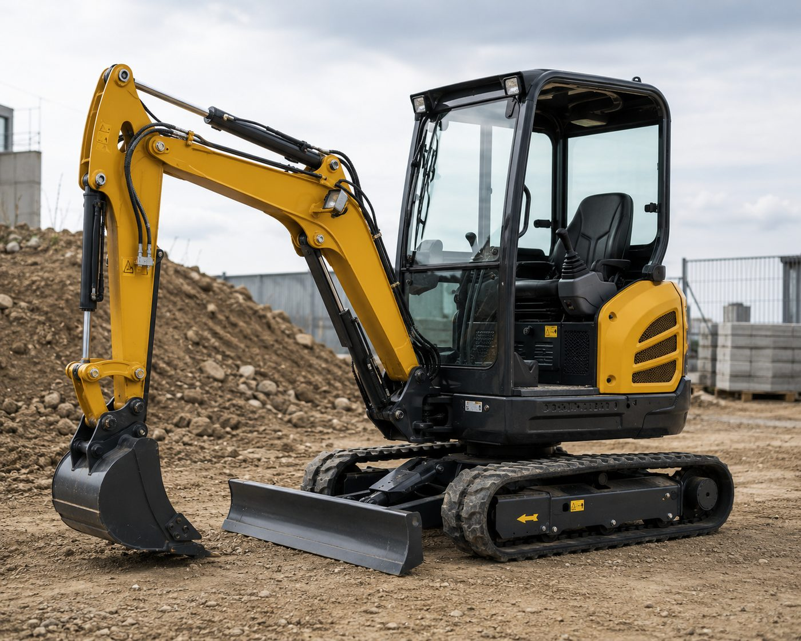
New and used mini excavators for sale from GND Machinery. Global supplier of compact excavators for construction, landscaping and utility work.

Buy new or used excavators from GND Machinery, a global heavy equipment supplier. Crawler excavators for construction, earthmoving and infrastructure projects.
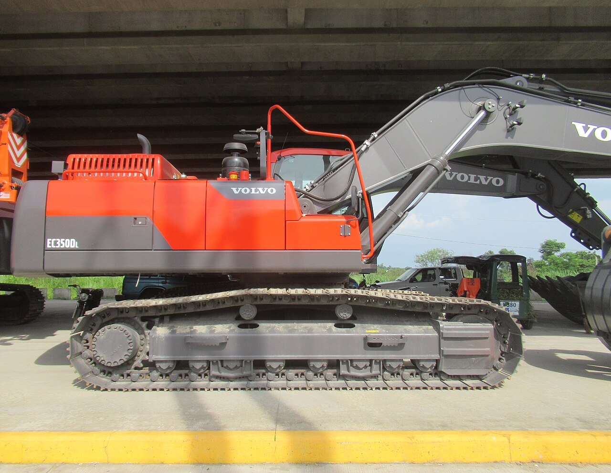
Heavy-duty and mining excavators for sale. GND Machinery supplies large-tonnage excavators for quarries, mines and large-scale earthmoving projects worldwide.
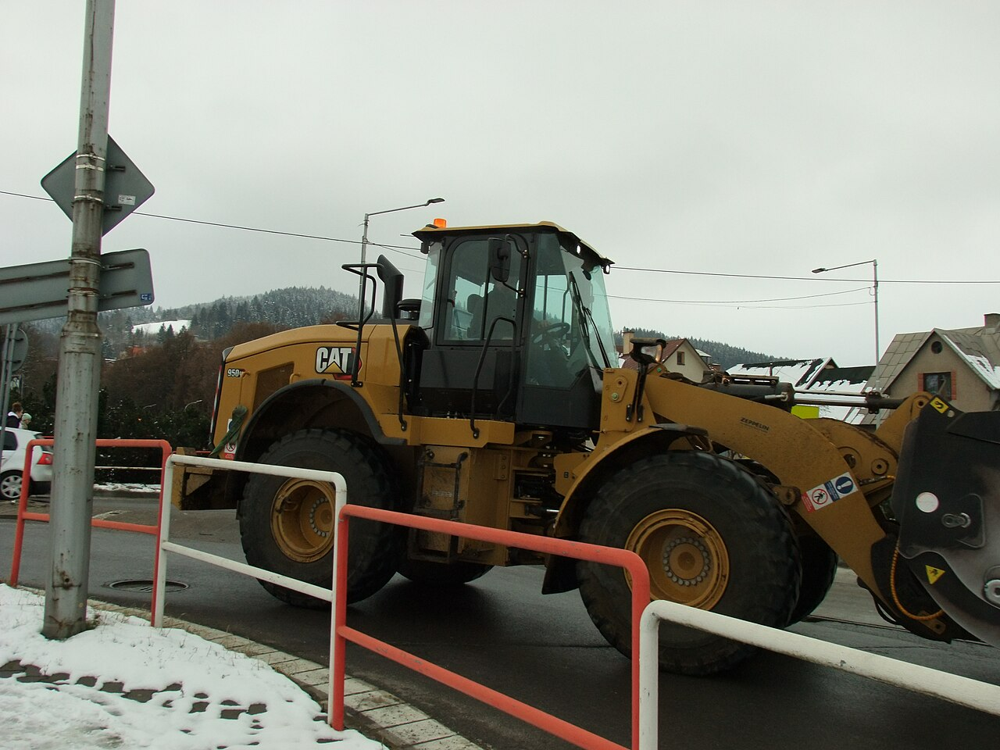
New and used wheel loaders for sale from GND Machinery. Global supplier of loading equipment for construction, quarrying and material handling.
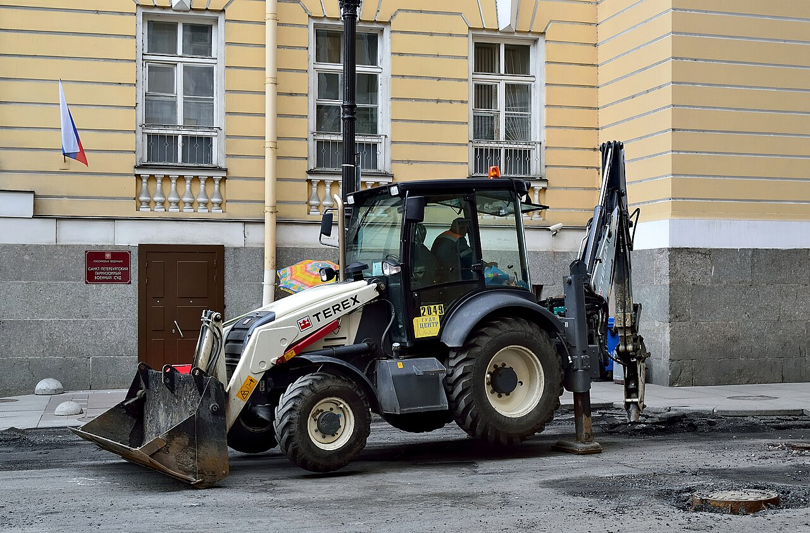
Backhoe loaders for sale, new and used. GND Machinery supplies versatile backhoe loaders combining excavation and loading in a single machine.
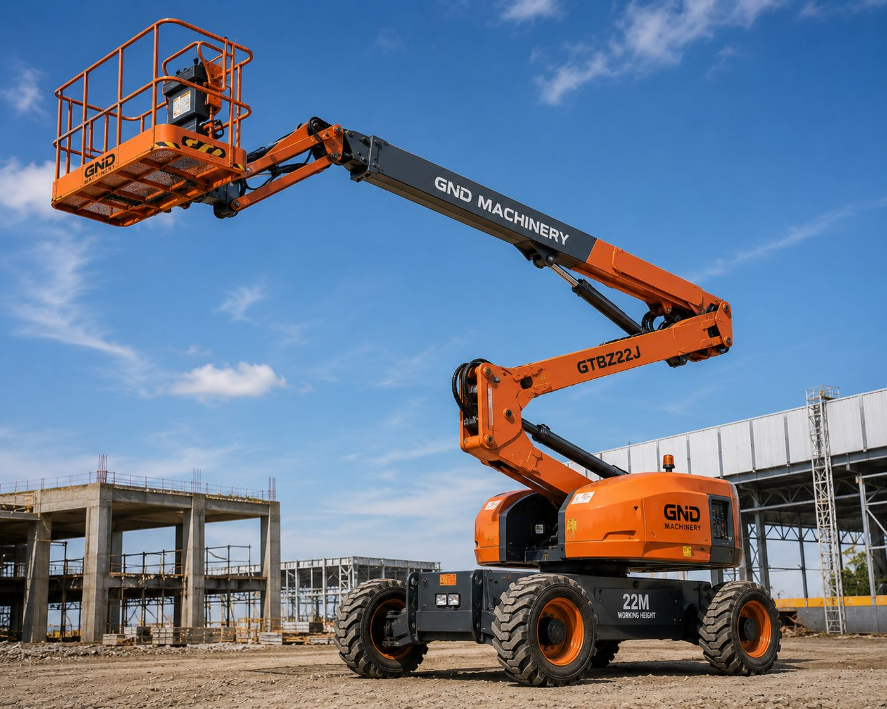
Boom lifts and man lifts for sale. GND Machinery supplies aerial work platforms for maintenance, installation and construction access work.
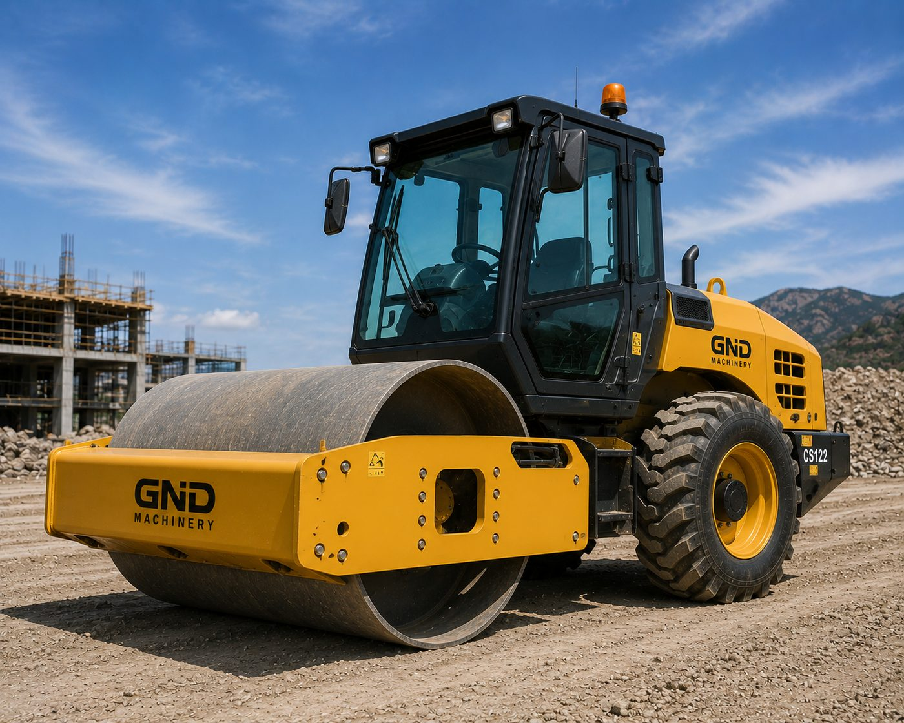
Road rollers and compactors for sale. GND Machinery supplies single and double-drum rollers for road construction and ground compaction projects.
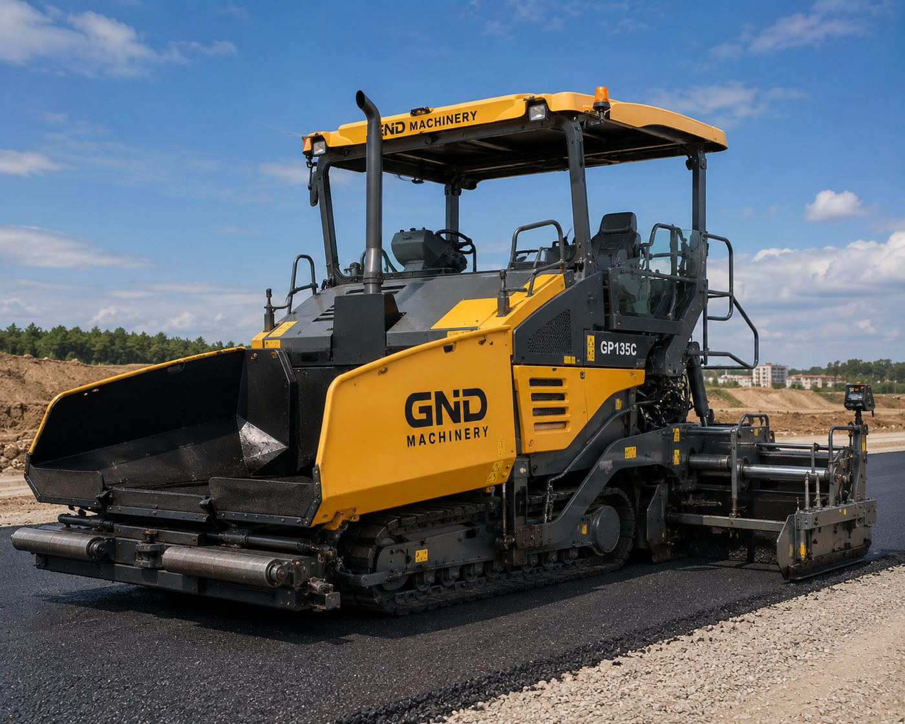
Asphalt pavers and finishers for sale from GND Machinery, a global supplier of road construction equipment for paving contractors.
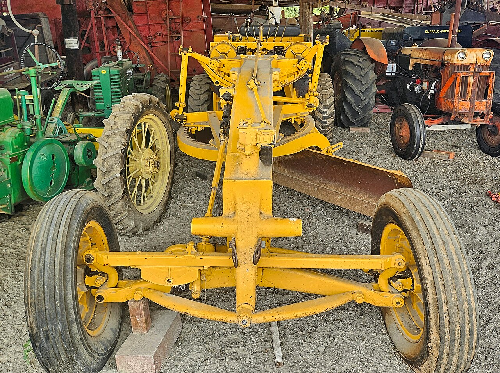
Motor graders for sale, new and used grading equipment from GND Machinery, a global supplier for road construction and site leveling.
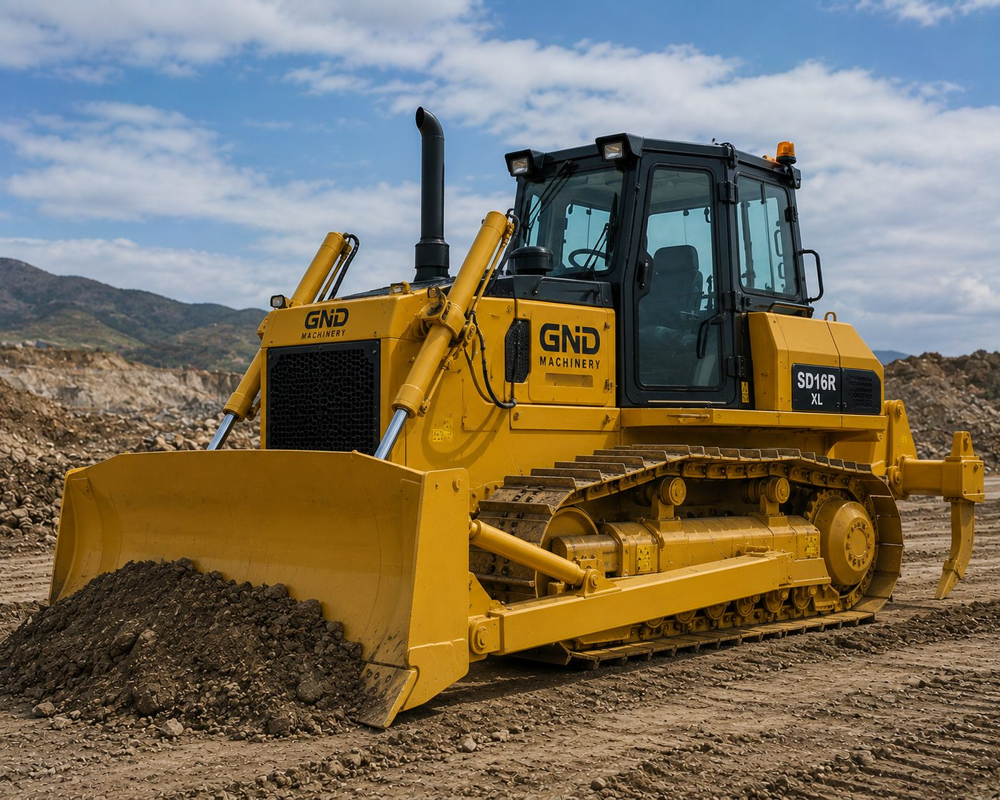
Bulldozers for sale, new and used dozers from GND Machinery, a global heavy equipment supplier for earthmoving and site preparation.
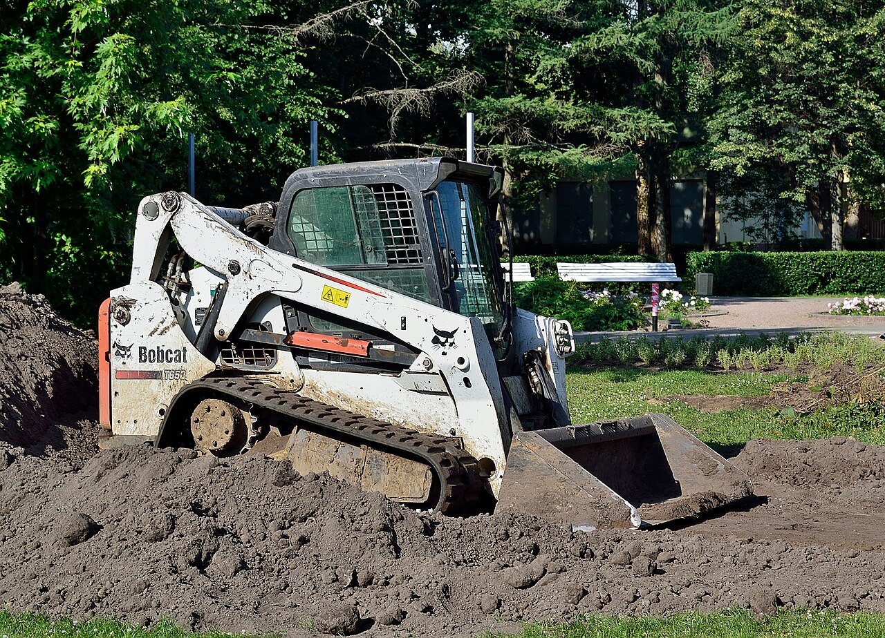
Skid steer loaders for sale, compact and versatile loaders from GND Machinery, a global supplier for landscaping, demolition and tight-access sites.